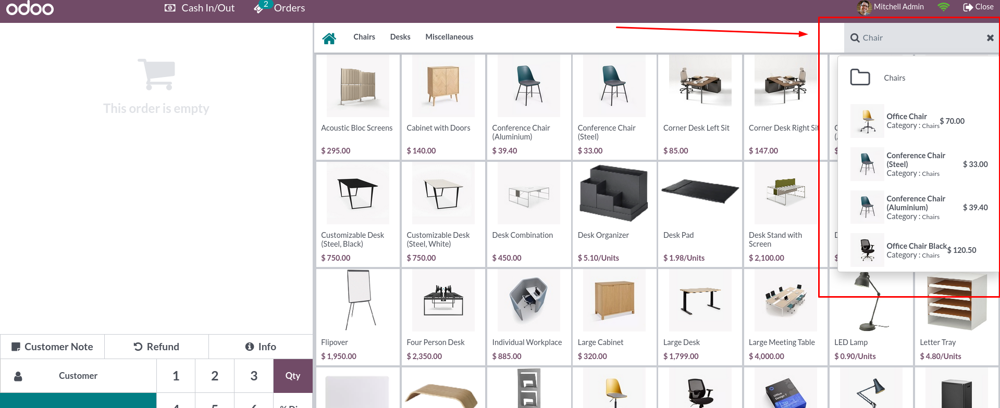
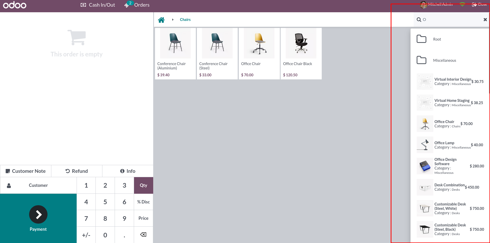
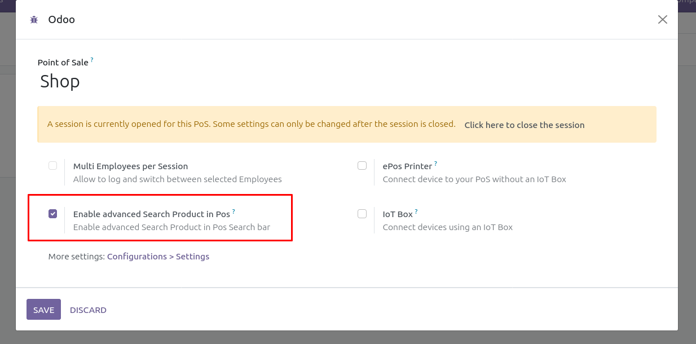
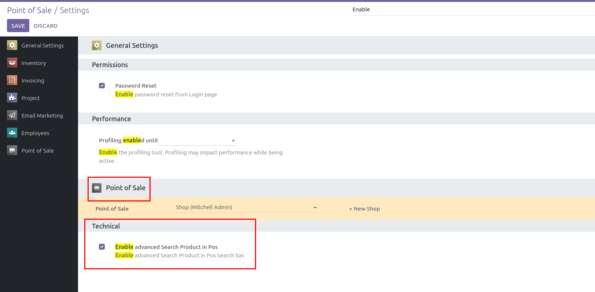

The "Enable Advanced Search Product in POS Search Bar" module enhances the Odoo Point of Sale (POS) system with advanced search capabilities, featuring auto-completion for faster product lookup. This module allows users to quickly find products by typing partial names, making the search process more efficient and user-friendly.
Here are screenshots showing the design of the POS search bar with the advanced search feature enabled:
 To enable the advanced search feature in the POS search bar, follow one of the methods below:
1. Click the three dots in Point of Sale to enable this feature.
2. Click the Edit button.
3. Find the option for enabling advanced search.
4. Check the checkbox labeled "Enable advanced search in POS".
1. Go to the POS configuration settings.
2. Locate the configuration for your POS.
3. Check the checkbox labeled "Enable advanced search in POS".
